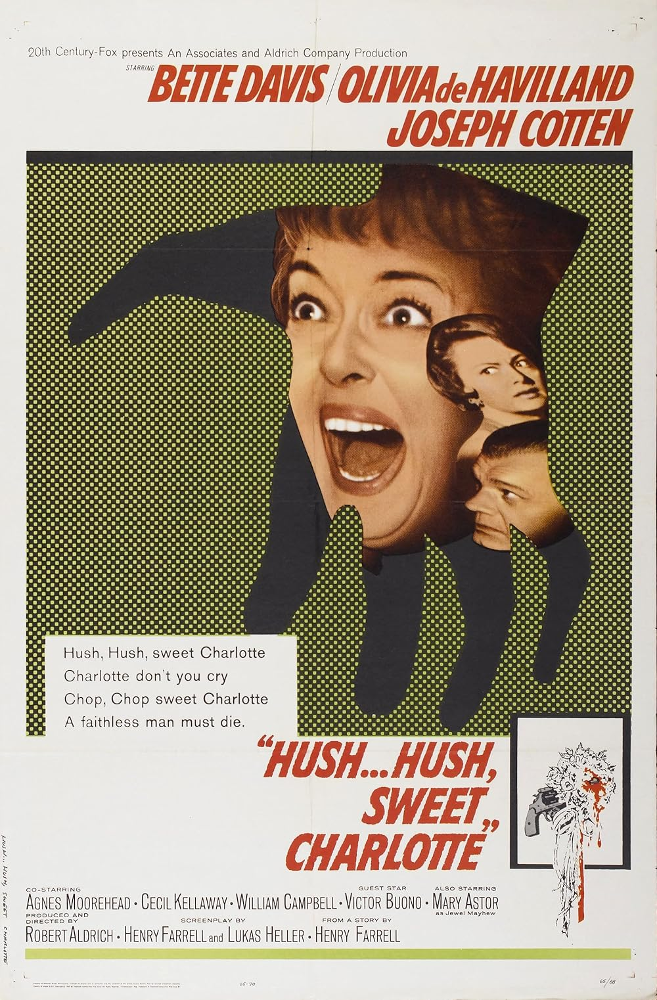

Hush...Hush, Sweet Charlotte
37th Academy Awards
(Oscars 1965)
7 Nominations, 0 Awards
| Nominations | ||
|---|---|---|
| Category | Nominees | Result |
| Actress in a Supporting Role | Agnes Moorehead | Nominated |
| Cinematography (Black-and-White) | Joseph Biroc | Nominated |
| Film Editing | Michael Luciano | Nominated |
| Art Direction (Black-and-White) | Raphael Bretton and William Glasgow | Nominated |
| Costume Design (Black-and-White) | Norma Koch | Nominated |
| Music (Music Score--substantially original) | Frank DeVol | Nominated |
| Music (Song) "Hush...Hush, Sweet Charlotte" |
Frank DeVol and Mack David | Nominated |